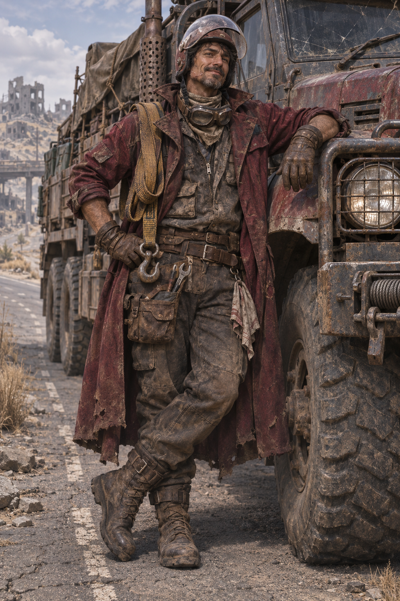

Quando estradas e veículos deixaram de oferecer segurança, Lastro começou a aprender quais avarias podiam ser resolvidas no local e quais exigiam uma retirada rápida.
PROPOSTA DE LORE // EM REVISÃO
LASTRO.
Lastro mantém o comboio em movimento e recupera veículos presos ou danificados. O capacete adaptado filtra poeira; a cicatriz na mandíbula ficou de um acidente de estrada.
ABRIR ARQUIVO FOTOGRÁFICO →
Este dossiê apresenta uma proposta revisável com base no conceito visual e na função do personagem. Idade, nome civil, datas e vínculos pessoais ficam em aberto quando ainda não foram definidos.
O que a extinção
deixou nele.
Os registros abaixo organizam sua função e sua trajetória em linhas gerais. As cenas específicas continuam abertas à revisão.
Um acidente de estrada deixou uma cicatriz em sua mandíbula. Ele adaptou um capacete antigo com filtro e passou a carregar ferramentas para recuperar veículos do comboio.
Hoje, conduz, inspeciona e ajuda a liberar veículos presos. Seu humor é seco e ele conversa com os motores como se fossem velhos conhecidos.
Condução e recuperação de veículos
- Condução em terrenos difíceis
- Recuperação e reparos de veículos
- Preparação de comboios
Cicatriz na mandíbula causada por acidente de estrada.
O que carrega
por dentro.
Prático, resistente e dono de um humor seco. Lastro parece despreocupado, mas percebe rapidamente quando um veículo deixa de ser seguro para a equipe.
“Se ainda tem roda, ainda pode tirar alguém daqui.”